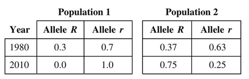

The table shows the changes in allele frequencies of a specific
gene in two populations of randomly mating small mammals
after 30 years. The populations inhabit adjacent equatorial
islands that have similar topography and climate. Which of
the following is the most reliable conclusion that can be
drawn from analysis of the data above?
Genetic drift is a possibility since allele \(R\) is eliminated from the population. Allele \(r\) was present in more individuals in 1980, suggesting that random mating may have led to further decline of the other allele.
If population 2 was in Hardy-Weinberg equilibrium, we would expect the allele frequencies to stay constant over the 30 year period.
Selection for \(r\) is not occuring in population 2. The opposite is happening.
There is no evidence that allele \(R\) provides benefits to the organism. If it did, we would expect the opposite trend as shown in the table.